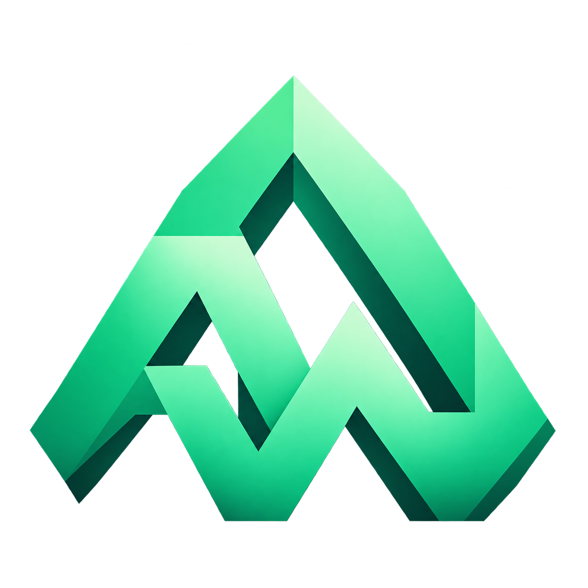

Ставит Minecraft, загрузчик и моды.Каждую сборку держит в своей папке
AWLauncher скачивает нужную версию игры, сам подбирает Java, ставит загрузчик и раскладывает моды по сборкам. Если игра вылетела, показывает причину из журнала.
1.20.1FabricSkyForge148 модов · 6 ГБ памяти · Java 21
62кадра в секунду в меню
Файлы проверены12 480 файлов, 0 расхождений
Версия подтянутаsnapshot 24w45a доступен
Загрузчика
4
Каталога контента
2
Языков интерфейса
50
Темы окна
4
FabricForgeNeoForgeQuiltModrinthCurseForgeВход через MicrosoftDiscord Rich PresenceАвтоподбор JavaСнапшоты и alphaИмпорт .mrpackРесурспаки и шейдеры
Возможности
Версии Minecraft, загрузчики, моды и Java
Манифесты версий, библиотеки и Java лаунчер скачивает сам. Каталоги Modrinth и CurseForge открываются внутри, а каждый профиль лежит в отдельной папке.
Версии и загрузчики в одном списке
Релизы, снапшоты, alpha и beta — рядом с Fabric, Forge, NeoForge и Quilt. Выбери версию и загрузчик, остальное лаунчер соберёт сам: манифест, библиотеки, ассеты, аргументы запуска.
Vanilla
Fabric
Forge
NeoForge
Quilt
1.21.4новая
1.21.1под моды
1.20.1проверенная
1.16.5для старых сборок
24w45aснапшот
1 200+версий в манифестах
автобиблиотеки и ассеты
кэшповторный запуск без скачивания
Каталоги Modrinth и CurseForge
Поиск модов, сборок, ресурспаков и шейдеров прямо в лаунчере. Обязательные зависимости ставятся вместе с проектом, обновления — из карточки сборки.
Импорт сборок .mrpack и .zip с manifest.json
Выбор конкретного выпуска и версии Minecraft
Обязательный файл не скачается — сборка не встанет неполной
Java не надо искать руками
Лаунчер подберёт подходящую среду под версию игры и установит её. Своя Java — тоже можно: укажи исполняемый файл или папку JDK, в том числе для отдельной сборки.
jdk-21.0.4+7 · подходит для 1.20.1
Проверка файлов и понятный вылет
Лаунчер сверяет загруженное с манифестами и читает журнал игры. Вместо «Error 1» — строка о том, чего не хватает: библиотеки, памяти или совместимой версии мода.
Память, JVM и окно
Ползунок памяти с рекомендацией под твою машину, свои JVM-аргументы, размер окна и полный экран — общие или отдельно для каждой сборки.
2 ГБрекомендуем 6 ГБ16 ГБ
Перенос из другого лаунчера
Укажи папку профиля, .minecraft или общий каталог instances — AWLauncher распознает Prism, MultiMC, Modrinth, CurseForge и ATLauncher, скопирует миры, моды и настройки, восстановит календарь активности из логов. Исходные файлы остаются нетронутыми, учётные данные — в старом лаунчере.
Загрузчик выбирается при создании сборки. Лаунчер запустит его установщик, разложит файлы по папке профиля и запишет версию загрузчика в карточку сборки.
Fabricпод моды и оптимизацию
Максимум модов на новую версию игры: Fabric успевает за снапшотами и почти не добавляет нагрузки. Оптимизационные моды и шейдеры встают без конфликтов.
loaderfabric-loader-0.16.5
minecraft1.20.1
java21
mods148
Сборки
У каждой сборки своя папка, миры и настройки
Моды одной сборки не мешают другой. Профили можно переименовывать, дублировать вместе с мирами и объединять в группы. Иконка берётся из готовых значков и фонов или из твоего PNG, JPEG и WebP до 8 МБ.
Избранное, группы и режим «Выбрать»
Отдельная память и Java для профиля
Статистика запусков и календарь активности
Перетаскивание папки или архива прямо в библиотеку
Подтверди вход в браузере — пароль вводится только на странице Microsoft. Токены защищены Windows DPAPI, сессия продлевается сама. Офлайн-аккаунты работают на серверах с online-mode=false.
Код для входаK7QP-3M4F
Токены лежат под защитой Windows DPAPI
Сессия продлевается сама, вход можно отменить в разделе аккаунтов
Пароль не попадает в лаунчер — только на страницу Microsoft
Скин с объёмным превью
Загрузи PNG 64×64 или 64×32 до 1 МБ, выбери Classic или Slim и посмотри персонажа до отправки. Потяни мышью — модель повернётся.
Потяни, чтобы повернуть
64×64 PNG · 1 МБ
Кнопка «Применить к аккаунту» отправляет скин в Minecraft Services с токеном этого аккаунта. Перед записью лаунчер проверяет UUID профиля.
Discord Rich Presence
Активность в Discord
Лаунчер говорит с установленным Discord через локальный Windows IPC. Ни входа, ни бота, ни токенов. Режим определяется по запуску игры и её журналу, без модов.
Адрес сервера скрыт, пока ты его не разрешишь
Можно показывать только игру или скрыть название сборки
Локальные картинки сборок никуда не отправляются
Перезапуск Discord обрабатывается сам
В сетиDiscord

Играет вMinecraftSkyForge · 1.20.1Одиночная игра01:24:07в сессии
Страница сборкиСкачать AWLauncher
Оформление
Четыре темы: светлая, тёмная, системная, OLED
Выбор сохраняется в лаунчере. Ниже можно переключить тему самой страницы и посмотреть, чем они отличаются.
50 локалей интерфейсаРусский, английский США и Великобритании, испанский Испании и Латинской Америки, португальский Бразилии и Португалии, два варианта китайского, арабский и иврит с направлением справа налево. Шрифты и переводы встроены — сеть не нужна.
Для официальных серверов — да, вход через Microsoft. Офлайн-аккаунт подойдёт для серверов с online-mode=false и одиночной игры.
В папку .aw: аккаунты, настройки, игровые папки и сборки. Каждый профиль хранит внутри свои моды, миры, ресурспаки, шейдеры и конфиги, поэтому сборки не пересекаются.
«Новая сборка» → импорт из папки. Укажи профиль, .minecraft или общий каталог instances — AWLauncher определит Prism, MultiMC, Modrinth, CurseForge или ATLauncher и скопирует содержимое. Статистика времени и логи подхватятся, часы не удвоятся.
Нужен официальный API-ключ AlpheusWorld: он задаётся в окружении AW_CURSEFORGE_API_KEY или файлом в профиле пользователя и уходит в API заголовком, а не в ссылке. Без ключа CurseForge-каталог молчит, Modrinth работает как обычно.
В журнал сборки: лаунчер разбирает вывод игры и подсказывает причину. Сначала проверь файлы профиля и объём памяти — это две самые частые причины.
Лаунчер предложит значение под твою машину. Для крупных сборочных профилей с сотней модов обычно хватает 4–8 ГБ; выставлять всю память компьютера не стоит.
Установка
Выбери свою систему
Подписанный установщик выходит для Windows. На Linux и macOS лаунчер собирается из исходников командой Gradle — готовых пакетов пока нет.
01
Скачай установщик и запусти
Компактное тёмное окно спросит папку и ярлык. Установку ведёт Windows Installer: прогресс, отмена и откат работают штатно, докачивать ничего не нужно.
02
Войди в аккаунт
«Аккаунты» → «Войти через Microsoft» и подтверждение в браузере. Для серверов с online-mode=false хватит офлайн-профиля.
03
Создай сборку
Выбери версию и загрузчик, поставь моды из каталога — и жми «Играть». Данные лаунчера живут в папке .aw.
Что понадобится
Windows 10 или 11, 64-бит — для готового установщика
JDK 21 — чтобы собрать лаунчер из исходников на Linux и macOS
Java для игры лаунчер ставит сам, искать вручную не нужно
Доступ к организации AlpheusWorld: репозиторий приватный
Как проверяется релиз
MSI и EXE подписываются Authenticode, подпись проверяется до публикации
update.json содержит SHA-256 дистрибутива
Обновление приходит с HTTPS-фида, релизы приватного репозитория — участникам организации AlpheusWorld
Релиз для Windows
Скачать AWLauncher
Установщик .msi для Windows 10 и 11 (64-бит) с подписью Authenticode. Для Linux и macOS лаунчер собирается из исходников — команды в разделе «Установка».